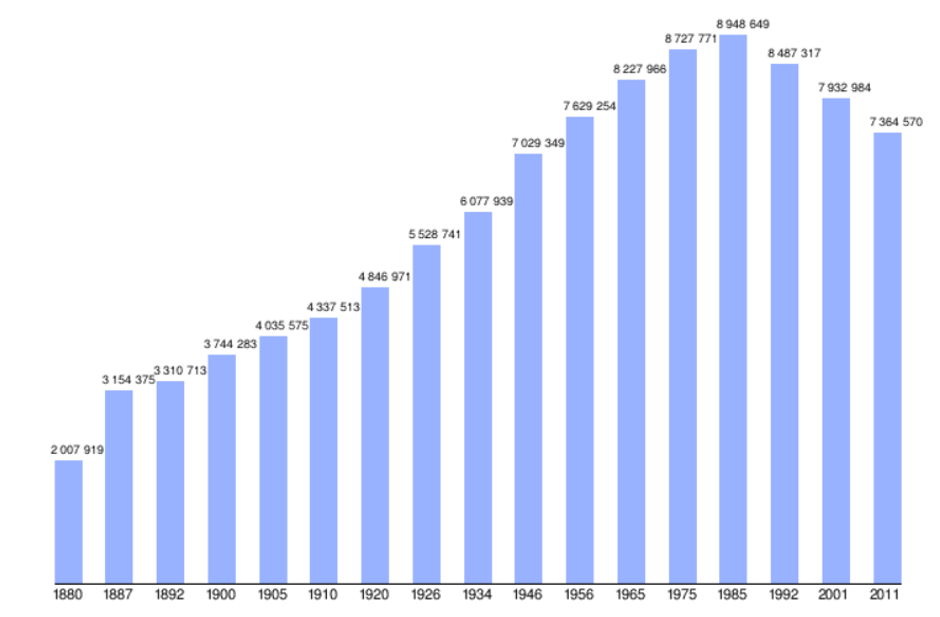

Население на България
Населението на България към 31 декември 2019 г. е 6 951 482 души, по данни на Националния статистически институт (НСИ). През 1989 г. населението достига 9 009 018 души. При последното преброяване през 2011 г. към 1 февруари 2011 г. общия брой на населението е 7 364 570 души.
Численост на населението
В България периодично се провеждат преброявания от НСИ. Динамиката на населението се определя от количественото му изменение във времето, като тенденцията е намаляване на фона на растящото население в световен мащаб. Таблиците и графиките по-долу дават числов израз на тези закономерности.
Преброявания на населението
| Година на преброяване | Численост | Графика |
|---|---|---|
| 1880 | 2 007 919 |  |
| 1910 | 4 337 513 | |
| 1946 | 7 029 349 | |
| 1985 | 8 948 649 | |
| 2011 | 7 364 570 |
Урбанизация
Запазва се тенденцията на урбанизация – в градовете живеят 5 125 407 души, или 73,7%, а в селата – 1 826 075, или 26,3% (към 31 декември 2019 г.)
Разпределение на населението
Разпределението на населението е неравномерно. 39,2% от населението в страната живее в 9 общини, които са с население над 100 000 души. В 60 общини преброените са под 6000 души и в тях живее 3,1% от населението на страната. Градовете наброяват 255, а селата 5047, а 181 са населените места, в които няма преброени жители. Една трета от населението на страната живее в седемте най-големи града, които са с население над 100 000 души.
Прираст на населението
Напусналите България за периода 1990 – 2005 се изчисляват на над 1 000 000 души. След политическите промени от 1989 г. се развива силна икономическа емиграция, включваща част от висшистите в България. Тази тенденция продължава и до днес.
От 1989 г. близо 1 000 000 души са напуснали страната, а живеещите в чужбина към 2007 г. са около 750 000 души. Емиграцията е един от главните фактори за намаляване на българското население. Заражда и друг вид миграция – към България от чужбина, имиграция. Част от имигрантите са българи от етническите общности в чужбина, получили българско гражданство на основание български произход - вариант едно. Все повече граждани на ЕС – главно Великобритания, Франция, Нидерландия, Италия, Полша, Германия, Испания, Гърция, Белгия, Ирландия и т.н., живеят временно или постоянно в страната във връзка с работа или заради по-евтиния живот. Има също руснаци, украинци, китайци, турци, араби и други с произход от Близкия Изток.
Според преброяването на населението на страната през 2011 г.:
Към 1 февруари 2011 г. в България живеят постоянно 36 723 лица с чуждо гражданство и те представляват 0,5% от населението на страната; Всяко второ лице с чуждо гражданство, живеещо постоянно в България, е от европейска държава извън Европейския съюз. Преобладават: руските граждани – 11 991 (65,1%); гражданите на Украйна – 3064 (16,6%); Република Северна Македония – 1091 (5,9%); Молдова – 893 (4,8%); Сърбия – 569 (3,1%); Към момента на преброяването в България постоянно живеят 8444 граждани на Европейския съюз, или 23% от всички чужди граждани в страната; Хората, декларирали, че притежават двойно гражданство – българско и друго, към момента на преброяването са 22 152 души, или 0,3% от населението на страната.За 2011 г. МВнР оценява броя на българските граждани, живеещи в чужбина, на над 2 милиона. Тази оценка е получена по преценка на българските дипломатически представителства. Данните са получени от МВнР по ЗДОИ чрез Обществения съвет на българите в чужбина. По данни на БНБ работещите в чужбина са 618 хил. души.
Естествен прираст
Към 31 декември 2019 г. естественият прираст в България е -6,7‰, като в градовете е -4,4‰, а в селата – -13,1‰.
Раждаемост
През 2010 г. тоталният коефициент на плодовитост в градовете е 1,43, а селата – 1,64. Общо е 1,49. За гр. София тя е 1,39. Най-ниска е в селата на Област Перник (0.99), а най-висока – в селата на Област Сливен (2,31). В повечето области в селата коефициентът е по-висок, в София-град, Софийска област, област Перник и Област Кюстендил градовете са с по-висок коефициент.